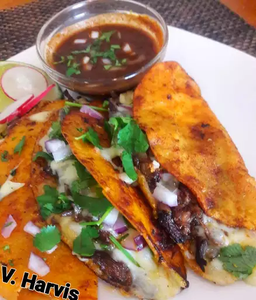
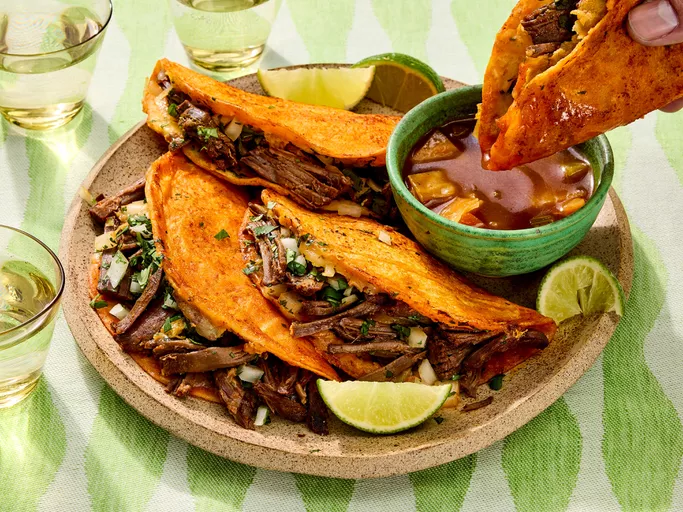

Birria Taco Recipe

Ingredients
Beef Birria:
- 1 (2 ½-pound) beef chuck roast
- 4 teaspoons kosher salt
- 2 teaspoons dried Mexican oregano
- 1 teaspoon freshly ground black pepper
- 1 teaspoon ground cumin
- ¼ teaspoon ground cinnamon
- ¼ teaspoon ground cloves
- 7 dried guajillo chiles
- 2 tablespoons olive oil
- 1 large onion, roughly chopped
- 6 cloves garlic, peeled
- 1 (1-inch) piece fresh ginger, thinly sliced
- 3 large tomatoes, cored and chopped
- 2 cups water
- 4 cups chicken broth
- ¼ cup white vinegar
- 3 bay leaves
- 1 tablespoon raw honey
- 2 tablespoons finely diced white onion
- 1 tablespoon chopped fresh cilantro
- 1 medium lime, sliced
Instructions
- Cut beef chuck in half; cut each half into 3- to 4-inch pieces.
- Place beef chuck into a soup pot; season with kosher salt, oregano, black pepper, cumin, cinnamon,
and cloves. Toss thoroughly until meat is evenly coated with spices, 2 to 3 minutes. Cover and keep
in the refrigerator for at least 6 hours to overnight.
- Prep guajillo chiles by snipping off stems with scissors; slice open and scrape or shake out seeds
onto a plate to discard.
- Heat olive oil in a saucepan over medium heat. Add guajillo chiles and toss in hot oil, about 30
seconds. Add onion, garlic, and ginger; toss to combine. Add tomatoes and water; bring to a boil.
Reduce heat to medium-low and let simmer for 30 minutes.
- Turn off heat and use an immersion blender to puree mixture as smooth as possible, or use a countertop
blender, working in batches as needed.
- Remove the soup pot with meat from the refrigerator. Strain pureed chile mixture into the pot using a
large mesh strainer. Add chicken broth, vinegar, bay leaves, and honey to the pot.
- Bring to a boil, then reduce heat to medium-low. Simmer gently, stirring occasionally, until meat is
fall-apart tender, 3 to 4 hours. Skim fat off of the top and reserve for future birria queso tacos.
- To serve, place a few chunks of beef into a soup bowl and spoon some cooking liquid on top. Sprinkle
with some white onion and cilantro; squeeze lime juice over the top.
Notes
The rule of thumb for this kind of thing is to use 1 teaspoon of kosher salt per pound of meat. You can use
other dried chiles, such as ancho, pasilla, or California, and you can use water with chicken bouillon powder
instead of chicken broth.
Water or broth can be added as needed to keep the stew brothy as it simmers, or it can be allowed to reduce and
thicken as it cooks. The beef can be served in large chunks or shredded with a fork.
If you enjoy this with beef, you should really get some goat or lamb and prepare it the same way. That little
bit of extra gaminess you gain with those meats really does work out, even with this flavor profile.
Ingredients
Consomé:
- 2 cups reserved sauce from beef birria recipe
- 1 cup chicken broth
- ¼ cup diced carrots
- ¼ cup diced celery
- ½ cup diced cabbage
Tacos:
- 3 tablespoons reserved beef fat from beef birria recipe, or more as needed
- 8 (5 inch) corn tortillas
- 2 cups freshly grated Monterey Jack cheese
- 2 cups shredded Beef Birria
- 4 tablespoons chopped white onion, or to taste, divided
- 4 tablespoons chopped fresh cilantro, or to taste, divided
- 1 medium lime, cut into 4 wedges
Instructions
- Gather the ingredients.
- To make the consomé: Stir beef birria sauce, chicken broth, carrots, celery, and cabbage together in a
saucepan over high heat. Bring to a simmer, then reduce the heat to medium-low and simmer, occasionally
brushing the caramelized bits (fond) off the side with the hot liquid, until vegetables are nice and tender
and consomé has reached the desired consistency, about 20 minutes. Reduce the heat to low and keep hot
while you prepare the tacos.
- To make the tacos: Heat some reserved beef fat in a large skillet over medium heat until melted. Add two
tortillas and flip with a spatula until generously coated in fat. Toast briefly until golden brown, then
cover with Monterey Jack cheese and some shredded beef.
- Drizzle each taco with about 1 tablespoon consomé liquid, then top with some white onion and cilantro.
- Fold tacos in half and press gently. Continue to cook, flipping back and forth, until browned and crispy,
2 to 3 minutes. Transfer to a plate and repeat to make remaining tacos, adding more fat if necessary.
- Ladle consomé into a bowl and garnish with any remaining white onion and cilantro. Squeeze lime wedges into
consomé and serve with tacos.
- Enjoy!

Nutritional Facts
Calories: 337
Fat: 19g
Carbs: 27g
Protein: 17g
Home